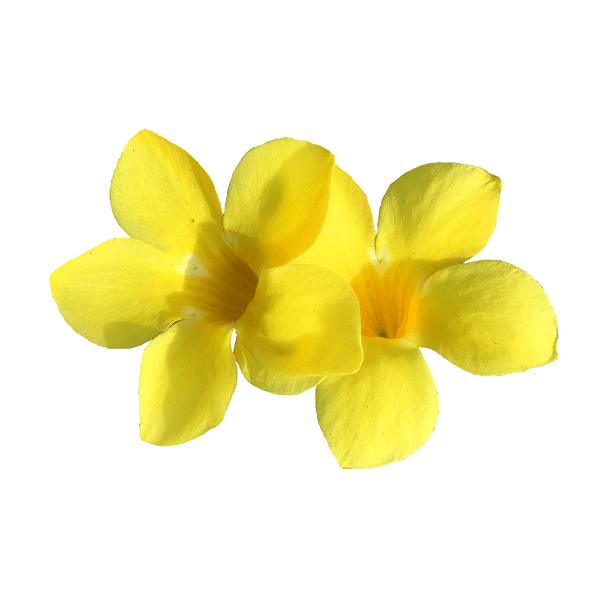

Yrsa supports some 45 languages in Latin.
The project design and production was done in-house by Anna Giedryś and David Březina. It is a deliberate experiment in remixing existing typefaces to produce a new one.
The Yrsa project is led by Rosetta Type, a type design foundry based in Europe.
Font available from Google Fonts.
The Yellow Bell flower, also called Yellow Elder, Trumpet Bush or the Golden Trumpet, is a tropical shrub or vine.
The plant has rich green foliage and bright yellow blooms, overlapping petals that create a trumpet shape. Flowers come into bloom in groups of two or three.
Yellow Bells are a good choice for a desert butterfly garden. Many of the native and desert-adapted plants available at local nurseries attract butterflies.